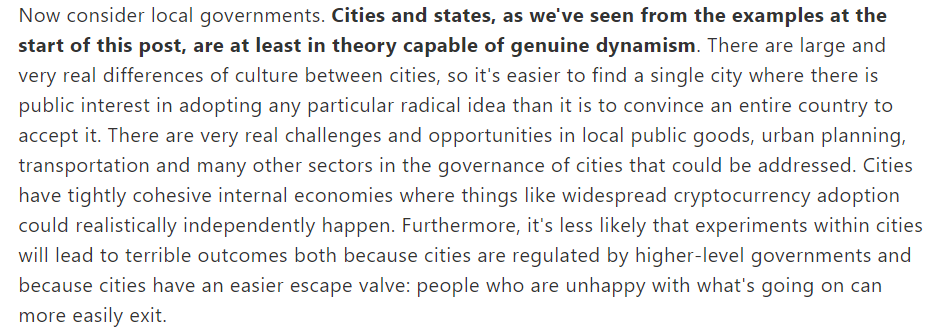
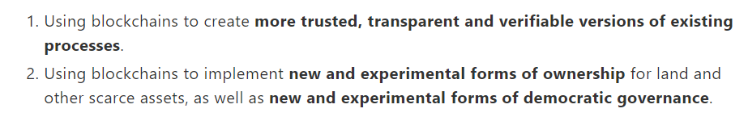
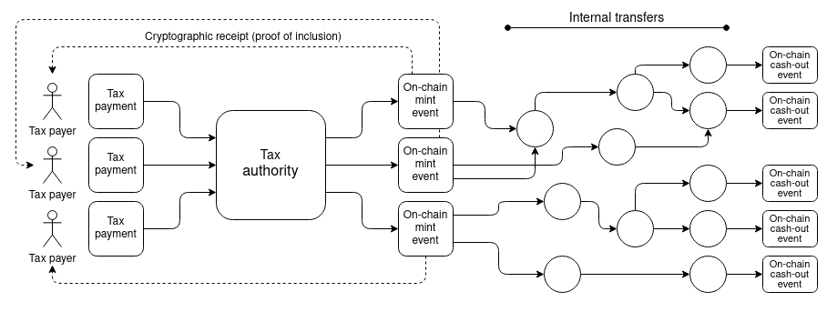
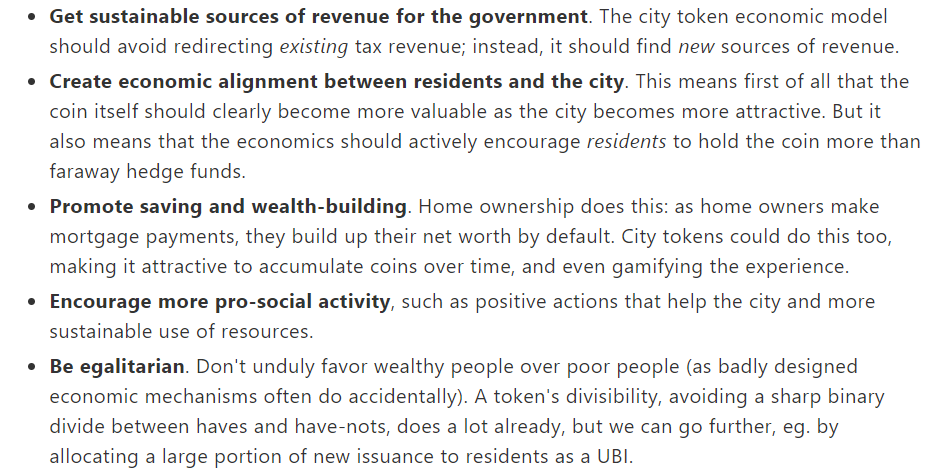

既有城市（civil），后有文明（civilization）。
尤其是工业革命后，城市化和现代化在绝大多数场合是等价的，发达国家城市居民占总人口比例普遍接近70%乃至更高。无论从任何角度，区块链要想真正成为像互联网那样改变世界的技术，就必须杀入城市，切实地改变城市居民的生活和城市治理的逻辑。
Vitalik大概也是基于这样的考虑，写下这篇文章的。
一 . Crypto Cities
与国内进行类似体制改革实验的谨慎相反，Vitalik认为，城市是优良的区块链技术试验场，一方面，城市间文化差异极大，选出一个相对年轻且一般观点相对激进的城市是容易的，至少比直接推动国家级主权政府做出转变容易的多；与此同时，城市复杂的产业结构及稠密的人口和资本，为进行各类实验都提供了完善的条件。
更重要的是，在Vitalik的理解里，城市自带一个好用的逃生机制，即当实验失败（或仅仅是实验的公共服务及税收组合不再适宜部分人）时，这部分人可以"轻易地"通过迁徙进行退出，这有点类似于蒂伯特模型里的用脚投票，但我高度怀疑这种"轻易"仅限数字游民而言。
然后Vitalik举了几个例子，包括内华达州的里诺市，他们的市长本人对区块链技术很热衷；Stacks链上的CityCoins.co项目，他们的城市币项目已经得到了迈阿密市政府的关心；以及最激进的City DAO，他们在怀俄明州的偏远角落购买土地，像何塞·阿尔卡迪奥·布恩迪亚那样建立全新的城市。
里诺市长希拉里·席夫女士
但说实话，即使考虑上对先驱者应有的尊重和体谅，上述这些cos欧文、圣西门和傅里叶的行为也显得太抽象了，抽象到相比之下，后面Vitalik提出的那些完全没落地的建议反而显得比较务实。这些建议分为如下两类——
1.使用区块链技术对现有治理机制进行优化，使其更透明、更高效
2.使用区块链对部分稀缺资产建立新的所有权制度
对于第一种，Vitalik给出了一些可能的情况以补充细节，比如用于记录政府部分内部的资产转移记录（我认为在我国更重要的是监控国企）、记录居民及企业纳税、退税记录、记录包括但不限于各类经营许可证的证书的颁发情况和过期时间，等等。
当然，除了记录以外，政府采买的招标工作也可以在链上完成，以避免更多的黑箱操作（虽然，政府其实没什么动力减少黑箱）；公众彩票事业的随机数生成器也可以用基于区块链的随机数生成器代替，以确保彩票的公平性。
作为补充，Vitalik特别解释，区块链可以在保证私密性的同时完成不可篡改的记录工作，比如依靠零知识证明隐藏税收总额的加总过程。
更激进，却也更重要的是第二种——新的确权和治理方式。在这里，他提出两种可能的实验方向，第一种是城市代币经济模型，第二种是参与性的民主治理机制。
Vitalik认为，城市代币经济模型是指，通过发布一种专属于某个城市的数字货币，将其既视作财产，也视作政治权利。这个模型的合理目标是同时满足以下五个目标，我概括了一下，分别是——
·代币成为政府税收外的额外稳定收入
·代币币值跟随城市前景同向变动，币值能反应城市发展预期（这可能潜在地要求代币的运行必须是足够市场化的）
·城市代币能促进储蓄和居民财富积累（长期保持温和通胀）
·鼓励更多的具有正外部性的社会活动
·平等（新居民和老居民平等，传统穷人和富人机会平等）
当然，Vitalik也指出，现阶段能做到其中三个就是很重大的进步，并不必指望现在就一蹴而就。而目前，一些简单的制度设计就可以轻易满足其中前三个要求，比如允许有一定代币持有量的居民获得某些权利。
迈阿密市的公共停车位仅对持币量超过一定数量的居民免费开放，基于这个政策，当城市人口和汽车保有量增加，停车压力增大的时候，车位价格的上升将带动币价的温和上升，而这就自然地满足了前三个要求。
至于新式的确权和治理方式，Vitalik的描述也较为模糊，比如官员选举或其他公共议题投票可以向某些DAO的治理借鉴经验，采用二次方投票代替现有的一人一票制度。
所谓二次方投票就是，假设第一票需要花费一块钱，第二票就需要花费四块钱，第三票是九块，随之递增。显然，这意味着更有钱/投票权的人，将对结果产生更大的影响，但这同时将展现出投票者意志的坚决程度，以确保投票产生的意志结果是真实的。
DAO的投票机制非常多，流动民主（Liquid democracy）、二次方投票、全息共识（Holographic Consensus）、信念投票（Conviction Voting）、可提认知投票 （Knowledge-extractable Voting）等等，我个人认为，Vitalik仅仅特别提到二次方投票，很可能是因为对于现阶段的城市治理来说，其他的动态投票机制都太过复杂和不确定，政策的解释成本也太高了。
最后，Vitalik做了总结，其中最核心的一段翻译如下——
政府应该避免的主要陷阱是太早地失去选择。现有的城市可能会发布一个糟糕的代币进而落入这个陷阱，更好的方法是循序渐进推出一个足够好的代币。而一个新的城市可能会因为出售太多的土地，使一小群早期进入者占据了上行空间的全部红利。理想的方案是从自给自足的实验开始，慢慢地进行那些不可逆转的变动。但与此同时，首先抓住机会也很重要。城市可以而且应该改善很多东西，也有很多机会去这样做。尽管存在挑战，但加密城市总体上是一个时机已到的想法。
二 . 中国可能有Crypto City吗？
乍一看这个问题好像还挺激进的，Vitalik文章所描述的一切构想都基于西式政治体制，市政府官员由选举产生，城市治理有较高的自由度，这与中央掌握人事任免权，具体事务向下层层发包的体制完全相反。更何况，中国政府对待加密行业的态度一向比较谨慎，将加密技术纳入城市治理似乎与现阶段的发展情况相去甚远。
但事实上，我认为中国不仅会有Crypto Cities，而且在这方面的发展绝不会落后给任何国家。
这是因为，在Crypto Cities的讨论里，加密技术是，或者至少可以是完全工具化的，就像互联网技术乃至计算机技术那样，在不分割政府权力的情况下提高经济效率。没有任何要求指明必须要用公链，即使可能是应用场景最复杂的UBI（全民基本收入）发放问题，也可以通过构建一个以户籍制度为依托的大型联盟链解决。
拥有该市户口的居民才能享有城市链上资产，而这样的联盟链是完全有可能保留政府的控制权的，我国现有的部分联盟链甚至在最上层设置了主节点，保留了政府关闭整条链的功能。（不必因此担心，真这么干也太不体面了）
一旦达到我国政府对区块链总体上"可管可控"的合规标准，剩下的问题就只有一个了——
事实上，恰恰因为人事任免权完全由上级掌握，地方政府官员的晋升制度是锦标赛式的，因此左右地方政府对待加密技术的态度的最直接因素既不是经济增长，也更不可能是某种价值主张，而是地方官员的政绩体现。
在那些逐渐转回政治挂帅（比如防疫）或者中央政府有意愿收权（比如税收）的方面，将地方政府透明化，无疑是中央政府的目标之一。举例来说，核酸结果直接由检测机构自动上链，就可以避免为保政绩而闹出来某些"非必要不确诊"和"无症状就是没阳性"的荒唐情况；政府内部资金流转链上进行，就可以对常年跳出三界外的各级小金库进行监控；至于这种透明化本身，则可以是单向的，比如仅对上级政府或纪委监委透明，而对公众可能并不开放，或者采用零知识证明对细节进行保护。
而在那些继续深化改革开放的领域，传统的以经济增长为单一考核指标的官员考评制度显然已经需要改变，从长期来看，过分单一的考核指标造成了单一的经济发展模式，需要向更多元、更客观的考核体系改革；从短期来看，房住不炒加动态清零压顶，在经济增长问题上，地方政府主观能动的空间也越来越小。
按惯例，这套新考核方案基本上不可能是由上而下，在一朝之间就能确定的，对于眼下的地方政府官员来说，探索一条基于提升综合治理能力的，能够充分、客观反映政绩的新路就是必然的选择，同时也是继续维持经济增长的现实要求。
在提升综合治理能力，尤其是提供城市基础设施这方面，区块链能祈祷的作用几乎是无可替代的。大如广东、湖北等省的地方征信区块链，小到迈阿密市的车位和城市代币绑定措施，类似的应用场景应该不会少。粗略来讲，几乎所有不是必须保护集权的地方，都可以是加密城市的舞台。